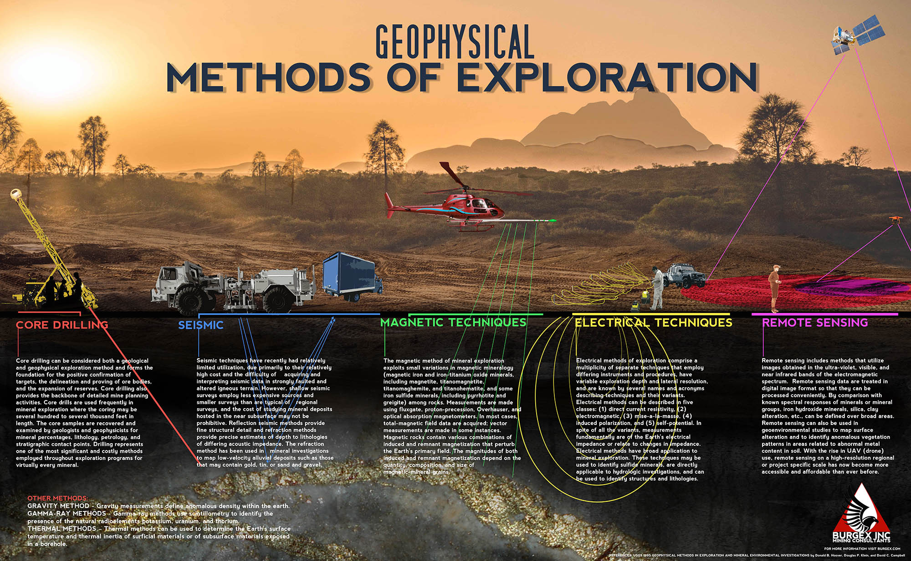
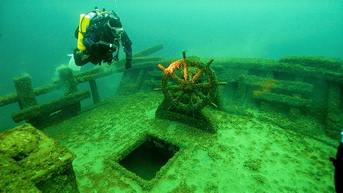
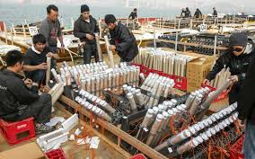

What is STEM?
STEM is a acronym which stands for science, technology, engineering, and mathematics.STEM fields are some of the fastest growing fields. It is estimated that there will be 55 million new jobs in STEM fields by 2020.
Why is it important to get more woman in STEM?
For one of the fastest growing indestrys STEM fields are greatly disportionalty male. This is a problem do simply to the fact that every indestry needs some form of diversity. As an example a wearable microphone for speaker.
 hey clearly had no female on the production team because they clearly didn't design this for someone who dose not have any pockets do to wairing a dress. In order to have products that work for all divirsity is key and one step tords diversity is more woman in STEM fields..
hey clearly had no female on the production team because they clearly didn't design this for someone who dose not have any pockets do to wairing a dress. In order to have products that work for all divirsity is key and one step tords diversity is more woman in STEM fields..

What are some lesser known STEM fields?
Exploration Geophysics
Photo credit: http://www.burgex.com/geophysical-exploration-methods/
Expoloration Geophysics job is to locate porental locations of presious medals and oil deposits.
Metalsmith
Photo credit: https://www.youtube.com/watch?v=TxXal_VCyxc
Matelsmith's are chemists they have to know what to mix together to make there metal stronger, softer, or requite a smaller temperiture to melt.
Food and Flavor Chemist
Photo credit: https://www.yourfreecareertest.com/food-scientist/
Ever wonder why junck food tast's so good? You can blame the Food and Flaor Chemist for that. Requiring a bachelors's in food science and stromg past in micobiology this profension has a average salarie of $65K
Underwater Archaeologist
Photo credit: https://marineprotectedareas.noaa.gov/toolkit/underwater-archaeology.html
75% of the world is covered in water so it is only natural that humans have lost stuff at sea. Underwater Archeologists use the latest equipment to scam the sea floor for sunken treasure.
Pyrotechnic Engineer
Photo credit: https://www.scmp.com/lifestyle/arts-culture/article/1414977/meet-fireworks-engineer-wilson-mao
Fireworks are amazing and so are the prople who set them up. Pryothechnics create the colorful displays that have become so common at every haliday.